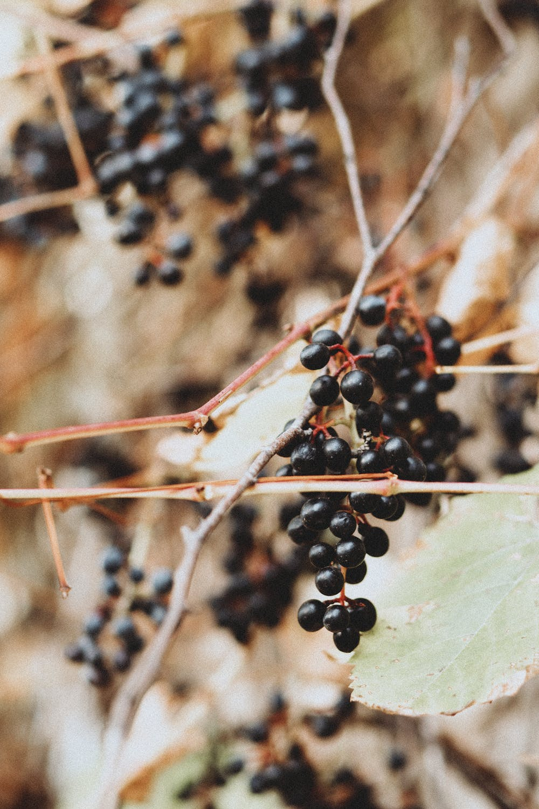
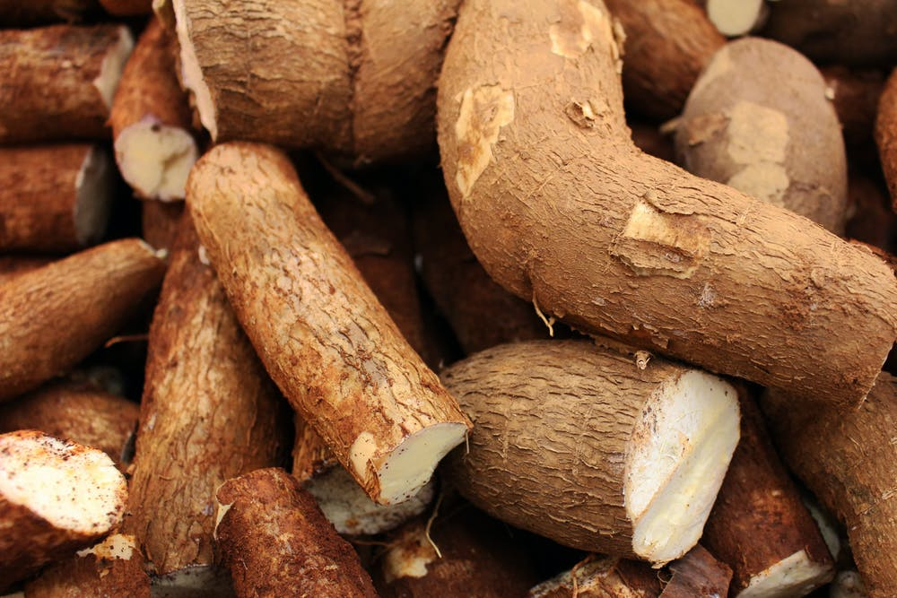
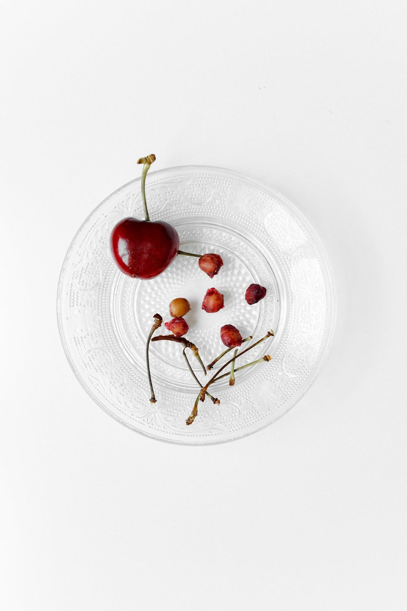

10 of the most toxic foods in the world
1. Elderberries
Elderberries are most known in Canadian forest, and berry farming. Elderberries are used in many varieties of food items, such as elderberry syrup, jam, bread, cake, chocolate, and elderberries are also used in making medicine! (Of course a small portion of medicines). Elderberries look as sweet as sugar, but deadly as a snake if you don't treat it well. That would be defined as If elderberries aren’t fully ripe or strained properly when they are processed, they can cause nausea, vomiting and severe diarrhea. So it's important that you have the general knowledge to understand how you treat the berry and how you got a system of understanding the correct berry tpe you have at home. For example, if you make the mistake of eating elderberries, but you thought it was blueberries because of the differences in looks, then you should call the ambulance quickly.
2. Cassava
Cassava is a tropical root crop, and is mostly harvested in Nigeria, Brazil, Thailand, Indonesia and the Congo Democratic Republic. The crop needs a lot of sunlight, tropical weather, and a decent amount of water. Cassava can be used to make delicious tea, cassava flour, pudding and even some variety of ice creams. But the crop isn't just playful, because the leaves and the root can produce toxic cyanide, which can irritate the eyes, nose, and throat. So it’s important to just cook the cassava in some water for approximately 15 minutes, and then soak it until it's dry. This prevents the toxic cyanide from entering your body, and the cassava crop would be non-toxic.
3. Hákarl
Even if you try really hard to pronounce “Hákarl”, is there no point in trying before you really see what Hákarl actually is. Hákarl is dried shark meat traditionally eaten in Iceland, and in English it is mostly known as fermented shark . The shark is imported from Greenland, and is later dried in big icelandish facilities in approximately 5 to 6 months. It has to be properly dried to get out most of the trimethylamine oxide, which comes from water the shark was swimming in, and the poison from the shark itself which is used as a defence mechanism for other predators in the cold sea in Greenland. If you eat Hákarl without specific safety regulations in the shark meat, then the danger is Intestinal distress, neurological effects, convulsions and even death can occur if eaten in large enough quantities.
4. Raw Kidney Beans
Even though kidney beans are high on fiber, carbohydrates, and even protein. Is it still dangerous, because Raw Kidney Beans contain Lectins. Lectin is a toxin that can give you a bad stomach ache, make you vomit, or give you diarrhea. It only takes 4-5 raw kidney beans to cause these side effects, which is why it’s best to boil your beans before eating. It only needs approximately 15 to 20 minutes of boiling time, until all the lectin has penetrated out of the kidney bean.

5. The vietnamese centipede
This monster of a centipede can be up to 30 centimeters wide, and is one of the deadliest insects on the planet. It has a record of the only centipede on the planet to ever kill a human being. Even though it can be highly dangerous, it still contains much protein, fibers and a small variety of vitamins. The vietnamese centipede needs to be pan seared in about 250 Celcius, and can be garnished with salt, pepper and other varieties of vegetables. It is very important to pan sear the centipede, as it removes the toxins inside it.
6. Cherry Pits
The hard stone of the center of your cherry can sometimes be irritating when you're biting into the delicious cherry. But you should be careful not to bite too hard into it, because it contains prussic acid, also known as cyanide, which is poisonous. So it's important to always spit out the stone, and throw it in the food waste bin so it doesn't reach other living organisms who think it's food and can potentially die from the pit.
7. Ackee fruit
Ackee fruit is a traditional fruit in Jamaica and south-Africa. The ackee fruit needs a warm climate, with tropical weather, and a decent amount of water to grow. It also needs a lot of good care, and needs superc\viosn from other insects which could kill the delicious fruit. Ackee fruit isn't the only organism who needs supervision, but also us humans from the ackee fruit. Unripe ackee contains a poison called hypoglycin, so the fruit must be fully ripe and allowed to open naturally on the tree in order to be safely eaten.
8. Green Potatoes
The leaves, sprouts, and underground stems of potatoes contain a toxic substance called glycoalkaloid. Glycoalkaloids make a potato look green when it’s exposed to light, gets damaged, or ages. Eating potatoes with a high glycoalkaloid content can cause nausea, diarrhea, confusion, headaches, and even death. You need to let the potato grow, and ripen more until it shows a natural color.
9. Star Fruit
If you suffer from kidney disease, then eating the unic star fruit has to go out of your daily food consumption. Normal kidneys can filter out the toxins in this sweet fruit, but for a system that can’t, the toxin sticks around and can cause mental confusion, seizures, and can even lead to death. So it's important to take a visit to your local doctor, and figure out some of your symptoms if you feel like something is wrong with your kidneys, or other organs in your body.
10. The deadly pufferfish
The big and round looking puffer fish looks relatively harmful. But don't get fooled by its look, as they say “It's the inside which matters”. Almost all pufferfish contain tetrodotoxin, a substance that makes them foul tasting and often lethal to fish. To humans, tetrodotoxin is deadly, up to 1,200 times more poisonous than cyanide. There is enough toxin in one pufferfish to kill 30 adult humans, and there is no known antidote. But even though the pufferfish is highly toxic, is it still edible. Some restaurants in Japan specialize in cutting the exact places of the pufferfish meat which is edible, and extremely careful of not including the meat which is toxic for us humans.